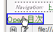
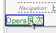

以上の条件を満たすとき、固定配置した要素がbody要素の下マージン領域内に重なっている状態では固定配置した要素の中にあるリンクが機能しない。
<style type="text/css">
body {
position: relative;
margin-bottom: 10em;
z-index: 0;
}
</style>
<div style="position:fixed; bottom:0; left:0; z-index:1;">
<a href="../opera.html">Opera目次</a></div>
閲覧領域の左下端にdiv要素が配置されています。ページの末尾までスクロールした状態でdiv要素内のリンクが機能するかを確認してください。
※マウスポインタを乗せた状態のスクリーンショットです。なおOperaでは左クリックしてもページ移動しません。
Netscape7.1標準モード
Opera7.2標準モード